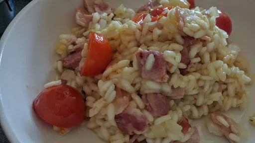

Oven-baked risotto

Servings:
4
Total:
35 mins
Ingredients
x0.5
x1
x2
x3
250
g pack smoked bacon, chopped into small pieces
1
onion, chopped
25
g butter
300
g risotto rice
half a glass
white wine (optional),
150
g pack cherry tomatoes, halved
700
ml hot chicken stock
50
g Parmesan, grated
Instructions
Heat oven to
200
°C/Gas
6
. Fry the
bacon
250
g pack
pieces in an ovenproof pan or casserole dish with a lid for
3-5
minutes until golden and crisp. Stir in the
onion
1
and
butter
25
g
and cook for
3-4
minutes until soft. Tip in the
rice
300
g
and mix well until coated. Pour over the
white wine
half a glass
, if using, and cook for
2
minutes more until absorbed.
Add the
cherry tomatoes
150
g pack
and the hot stock, then give the
rice
300
g
a quick stir. Cover with a tightly fitting lid and bake for
18
minutes until just cooked.
Stir through most of the
Parmesan
50
g
and serve sprinkled with the remainder.
kcal
517
fat
20 g
saturates
10 g
carbs
63 g
sugar
0 g
fibre
2 g
protein
122 g
salt
3.38 g
BBC Good Food: One-pot Dishes
Short Link
Long Link